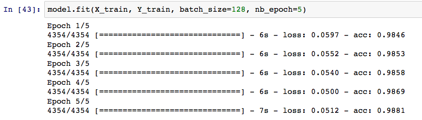

Detecting Malicious Domains Using Embeddings and LSTMs
I've recently been enjoying this blog post from the group at Invincea. In the post, they tackle the problem of building a classifier to detect malicious URL strings. In this instance, by 'malicious' we mean a URL that represents traffic that was genertaed by malware or some other nefarious source. For example, malware might generate some CommandAndControl traffic or other reachback to an external source in order to receive instructions or payloads. Our assumption is that the typical domains and URLs that are used for these nefarious purposes are somehow different than those associated with more benign traffic. If this is the case, then we build a classifier to learn to discriminate between malicious and benign URLs, and we could do so using whatever machine learning methods we like best.
To tackle this problem, we might gather a set of known-malicious URLs and set of known-benign URLs and get to work. A useful proposal from the Invincea group is that we can pretty much skip the "feature engineering" component of this problem if we use some particular deep learning approaches. By feature engineering I mean: what can transformations can we do on the input data (URL strings) to generate useful numerical and categorical features that we can use for classification. For example, we would immediately compute simple things like (i) string length, (ii) string entropy, (iii) prevalence of special characters within the string, and so on. But this process of deciding what features ought to be useful can take a lot of guesswork and can make-or-break the success of the endeavor. What Josh and Konstantin propose is to take the humans out of the loop entirely and do no direct feature engineering. Instead, they propose a deep network architecture where the input strings are fed into a vector embedding layer and then into a variety of different convolutional layers. The net effect of this, they demonstrate, is that the embedding and the downstream layers are able to extract exactly the features that are useful for the classification task. I wanted to give this basic notion (no feature engineering) a try and so below are some notes of my experiment.
For labeled data, I turned to the blackweb project which has collected thousands of samples of known-malicious and known-benign domain names. I pulled several thousand examples of malicious and benign domains to work with.
Here's a few example of the benign domains:
.cache.pack.google.com .r11.sn-hp57knle.gvt1.com .baymsg1010825.gateway.edge.messenger.live.com
Here's a few example of the malicious domains:
.sydneyhillsallergy.com.au .tradefinancecertifiedgroove.com .nanoadvisoravatarinternetmarketing.com
There was some inevitable data wrangling to get things in shape for training a classifier. After cleaning up the strings, I converted the raw strings (which are characters) into a numeric representation as one-hot-encoded. Here's a simple class I create for keeping together the data preparation components.
class DataPrep:
def __init__(self):
pass
def load_url_file(self, file_path, skip_lines=0):
with open(file_path) as file:
lines = file.readlines()
raw_url_strings = [line[:-2] for line in lines[skip_lines:]]
return raw_url_strings
def to_one_hot_array(self, string_list, max_index= 256):
self.max_index = max_index
x_one_hot = [one_hot(" ".join(list(sentence)), n = max_index) for sentence in url_strings]
self.max_len = max([len(s) for s in x_one_hot])
X = np.array(pad_sequences(x_one_hot, maxlen=self.max_len))
self.relevant_indices = np.unique(X)
charset = set(list(" ".join(url_strings)))
self.charset = charset
encoding = one_hot(" ".join(charset),n=max_index)
self.charset_map = dict(zip(charset,encoding) )
self.inv_charset_map = dict(zip(encoding, charset) )
return X
def shuffle(self, X,Y):
a = range(Y.size)
np.random.shuffle(a)
X = X[a]
Y = Y[a]
return(X,Y)
def train_test_split(self, X,Y,proportion):
(X,Y) = self.shuffle(X,Y)
max_ind = int(proportion * X.shape[0])
return(X[:max_ind,:],X[(max_ind+1):,:],Y[:max_ind,], Y[(max_ind+1):, ])
With this, I load up the malicious dataset and the benign dataset and wrangle them into a numeric form appropriate for the keras model I'm going to use. And I create labels and a training and test set split.
prep = DataPrep()
bl_strings = prep.load_url_file("./fixtures/blackweb_blacklist_urls.txt", skip_lines=3)
wl_strings = prep.load_url_file("./fixtures/blackweb_whitelist_urls.txt", skip_lines=3)
url_strings = bl_strings + wl_strings
X = prep.to_one_hot_array(url_strings)
Y = np.concatenate( [ np.ones(len(bl_strings)), np.zeros(len(wl_strings)) ])
(X,Y) = prep.shuffle(X,Y)
(X_train, X_test,Y_train,Y_test) = prep.train_test_split(X,Y,.5)
I then turn to keras, which is one of my favorite deep learning libraries. I'm going to create a simplified architecture of here what Josh and Konstantin did in their paper. My input strings are sequences of categorical variables (characters) that live in a ~60 dimensional space. The first layer is a dense vector embedding, where I'm trying to find vector representation of each char in this metric space. In such embedding use cases, the embedding dimensionality will be far smaller than that of our total "vocabulary". In this instance, our "vocabulary" is only about 60 to begin with so my embedding dimensionality is about 30.
I then output the sequence of embedding vectors into an LSTM layer. I wanted to simplify the approach of the blog post a bit, so instead of a variety of convolutional layers, I'll just do a single RNN layer here, just to test out these premises. Then the output of the LSTM goes into a simple Dropout and then finally to a single-output Dense layer for class prediction.
# IMPORTS
from keras.models import Sequential
from keras.layers import Dense, Dropout, Activation, Convolution1D
from keras.optimizers import SGD
from keras.layers.embeddings import Embedding
import numpy as np
import seaborn as sns
from keras.preprocessing.text import one_hot
from keras.layers import LSTM
from keras.preprocessing.sequence import pad_sequences
# MODEL DEFINITION
model = Sequential()
model.add(Embedding(prep.max_index, 30, input_length=prep.max_len))
model.add(LSTM(output_dim=64, activation='sigmoid', inner_activation='hard_sigmoid'))
model.add(Dropout(0.5))
model.add(Dense(1))
model.add(Activation('sigmoid'))
model.compile(loss='binary_crossentropy',
optimizer='rmsprop',
metrics=['accuracy'])
So I fit this simple architecture to the training data and I do pretty well, close to 99% accuracy on the training set after a few epochs of training. On the holdout test set, we actually find comparable accuracy, so we did a better job of not overfitting than I was expecting.
Here's a ROC curve on the test set, with an AUC of about 0.98.
So I've just started tinkering with this idea and certainly haven't attempted many different architectures, but it seems pretty promising after a brief amount of effort. I look forward to experimenting more with these general ideas.
One final fun thing we can do here. With the embedding layer, we have chosen to represent each token as a point in a 30-dimensional space. Our tokens from this dataset are just alphanumeric characters so we might be interested to see which characters are "near" each other and which are farther. To visualize this, we need to project from 30-dimensional space down into a two dimensional subspace. I've done this with simple Multi Dimensional Scaling. The results are below, though I haven't really dug in to interpreting the output here.